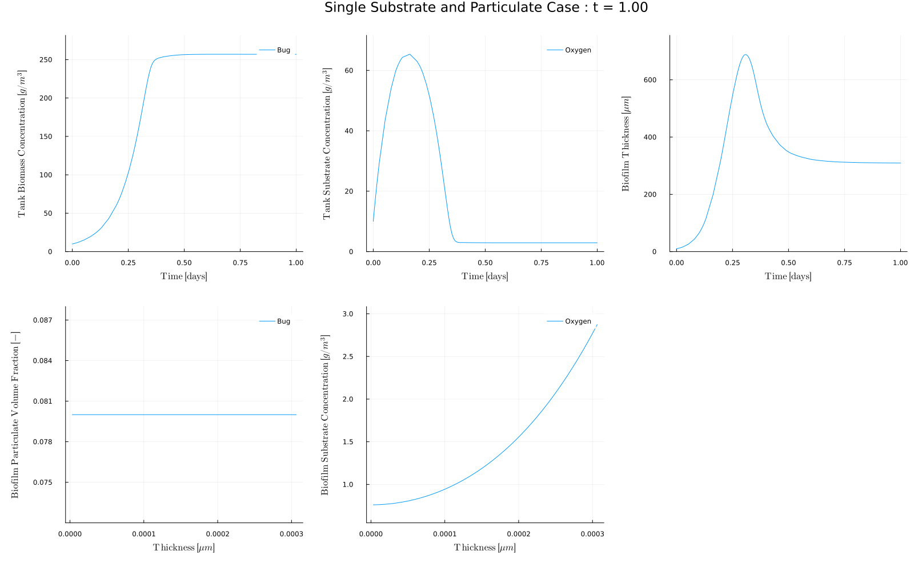

Examples
Case 1 - Single Substrate and Particulate Case
This case simulates a single particulate ("Bug") and a single substrate ("Oxygen"). The particulate has a growthrate of
\[\mu = \mu_\mathrm{max} \frac{S}{K_M + S}\]
Download Case1.jl by right-clicking on the link and choosing Save As. Save the file to your Downloads folder (or other location of your choice).
Run the case by running the following within Julia on Windows
using Biofilm include("Downloads\\Case1.jl.txt")or within Julia on on Mac/Linux
using Biofilm include("Downloads/Case1.jl")The simulation runs and should produce an output like this:  The top row shows the biomass (particulate) and substrate concentrations and the biofilm thickness as a function of time. The bottom row shows the particulate volume fraction and substrate concentrations as a function of position within the biofilm at the output time (t=1.0 as indicated by the title).
Case 2 - Multiple Substrates
This is a simple example of how multiple substrates can be simulated. Substrate 1 is used by "Bug" while substrate 2 is completely indpendent (not very interesting).
Case 3 - Live/Dead Bugs
This example has living bugs that use the substrate to grow. The bugs die and the concentration of dead bugs is also computed. The source term, src, is used to transfer living bugs to dead bugs.